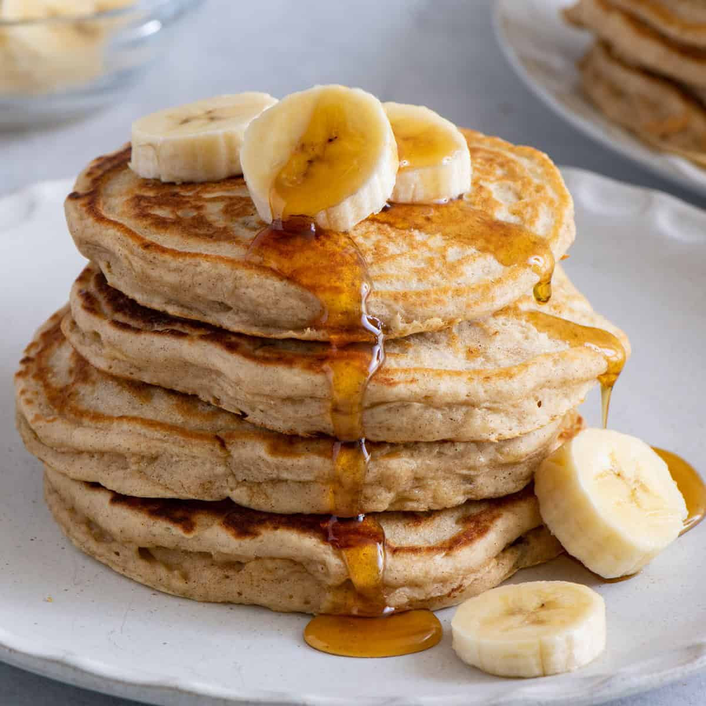

Home
Banana Pancake

Description
A plate full of plain banana pancakes is like a blank canvas.
When it comes to toppings, you can keep it simple or get as
creative as you want. If you're in need of a little inspiration,
here are some of our favorite ideas:
Ingredients
- cup all-purpose flour
- 1 tablespoon white sugar
- 2 teaspoons baking powder
- ¼ teaspoon salt
- 1 egg, beaten
- 1 cup milk
- 2 tablespoons vegetable oil
- 2 ripe bananas, mashed
Directions
- Gather all ingredients.
- Combine flour, white sugar, baking powder, and salt
in a bowl. Mix together egg, milk, vegetable oil, and bananas i
n a second bowl. Stir flour
mixture into banana mixture; batter will be slightly lumpy.
- Heat a lightly oiled griddle or frying pan over medium high heat.
Pour or scoop the batter onto the griddle,
using approximately 1/4 cup for each pancake.
- Cook until pancakes are golden brown, 3 to 5 minutes per side. Serve hot.